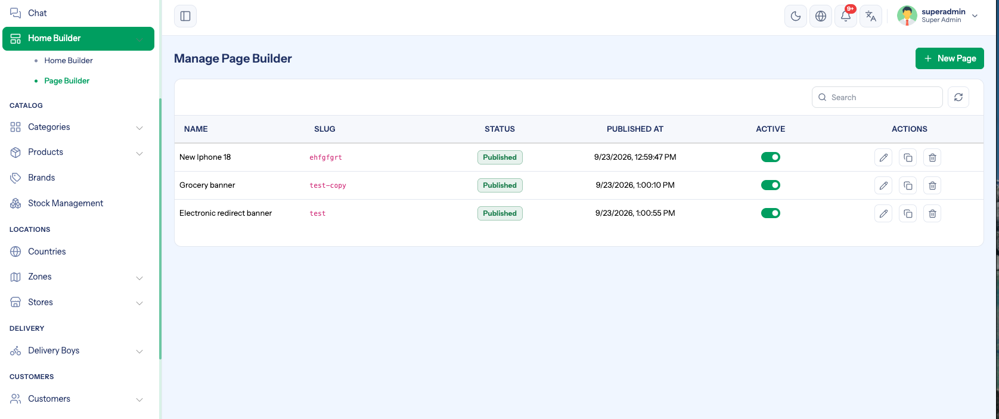
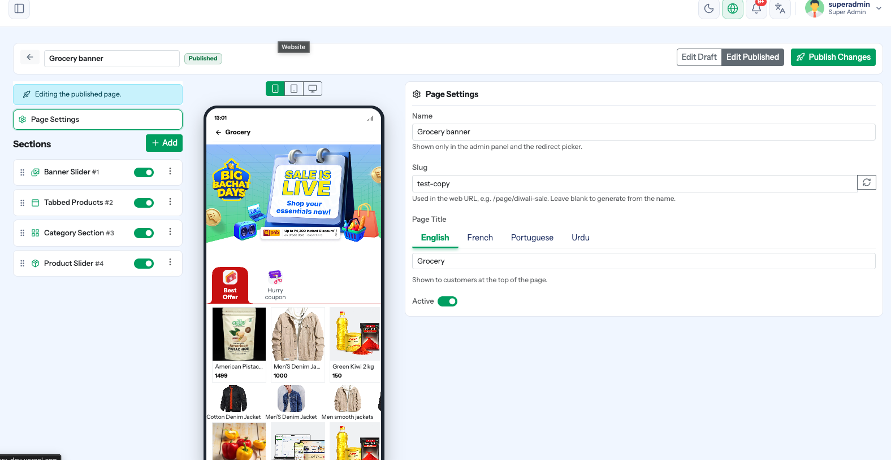

Page Builder
Menu path: Home Builder → Page Builder
Builds standalone landing pages out of the same sections the Home Builder uses — a Diwali sale page, a new-arrivals page, a brand showcase. You then point a banner, a grid tile or any other redirect at the page.

Page Builder vs Home Builder
| Home Builder | Page Builder | |
|---|---|---|
| What it lays out | The home screen of a zone | A separate page customers open from a link |
| How many are live | One layout per zone and channel | As many pages as you like |
| How customers reach it | It is the home screen | A banner, tile or section redirect pointing at the page |
| Section types | The same eight | The same eight |
Creating a page
- New Page — give it a name. Everything else is set in the editor.
- The editor opens with Page Settings selected.
| Setting | Meaning |
|---|---|
| Name | Internal name — what you see in the page list and in redirect pickers |
| Slug | The page's address, e.g. diwali-sale. Use the refresh button to generate it from the name. |
| Page Title | The heading customers see. Translatable per language. |
| Active | Whether a published page is being served. Only a published page can be activated. |
Change the slug before you advertise the page
The slug is how the page is looked up. Changing it after a campaign is live breaks every link already pointing at the old one.
Adding sections
Sections → Add offers the same section types as the Home Builder — Banner Slider, Category Section, Product Slider, Tabbed Products, Top Brands, Grid Banner, Title Image, Heading / Text — and the same per-section controls: drag to reorder, clone, activate, and choose which platforms it appears on.

Section configuration is identical to the Home Builder, so see Home Builder for data sources, images, platforms and multi-language text.
Draft and published
A page has a draft and a published copy, exactly like a home layout.
| Button | Does |
|---|---|
| Save Draft | Stores your edits without changing what customers see |
| Publish | Promotes the draft to live |
| Edit Draft / Edit Published | Switches which copy you are editing |
| Publish Changes | Pushes edits made directly on the published copy |
A published page is not live until it is also Active
Publishing builds the live copy; the Active switch decides whether it is served. A published-but-inactive page returns nothing to the app, and the redirect picker labels it (inactive).
Pointing customers at a page
Anywhere the panel offers a redirect — a banner, a grid tile, a title image, a text section — choose Redirect Type → Page Builder and pick the page.
| Label in the picker | Meaning |
|---|---|
| Page name | Published and active — will open |
(draft) | Never published — the link goes nowhere |
(inactive) | Published but switched off |
See Home Builder → Banners and redirects.
Cloning
Clone copies a page with all its sections. Use it to build next month's campaign from last month's, then change the artwork and the products.
Troubleshooting
| Symptom | Cause | Fix |
|---|---|---|
| Banner opens an empty page | The page is a draft, or inactive | Publish it, then switch Active on |
| Page shows old content | Edits were saved to the draft only | Publish |
| Page missing on one platform | The sections are switched off for that platform | Check the platform toggles on each section |
| Cannot switch Active on | The page has never been published | Publish first |
| A link stopped working | The slug was changed | Restore the old slug, or update the links |
Checklist
- Name and slug final before the page is advertised
- Page title filled in for every language
- Sections built and ordered
- Platforms checked for each section
- Page published and active
- The banner or tile that points at it tested on a real device